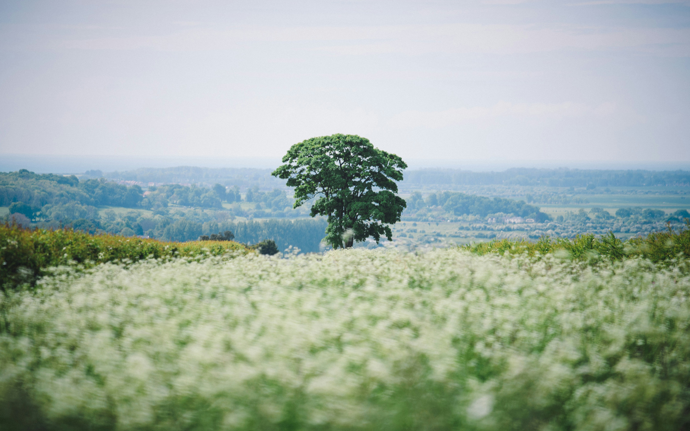
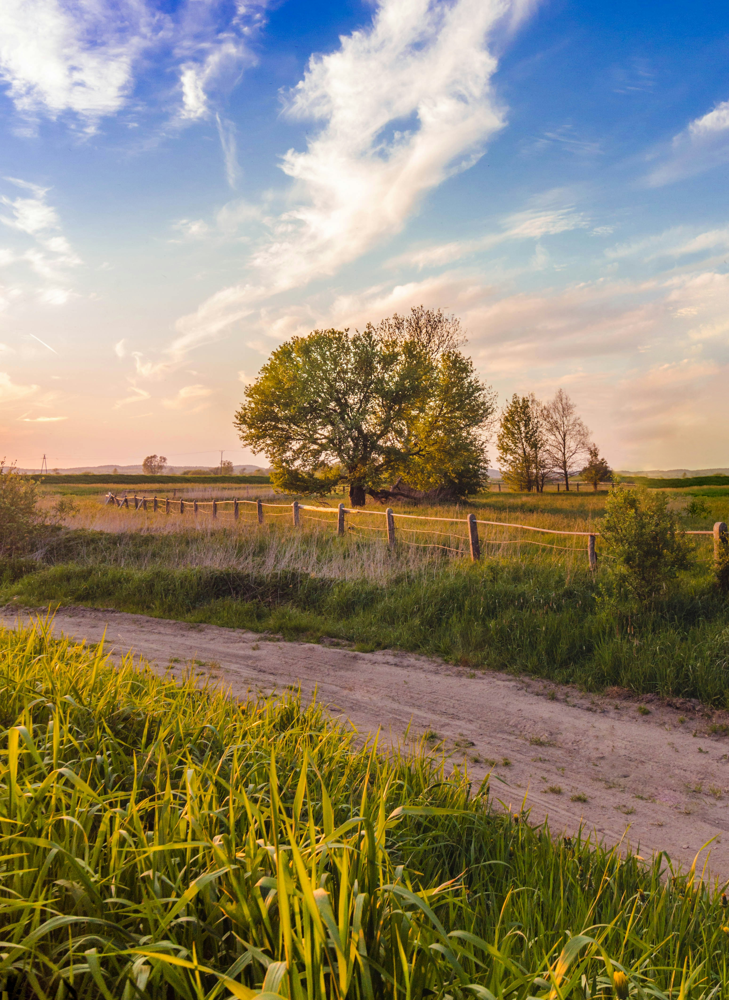
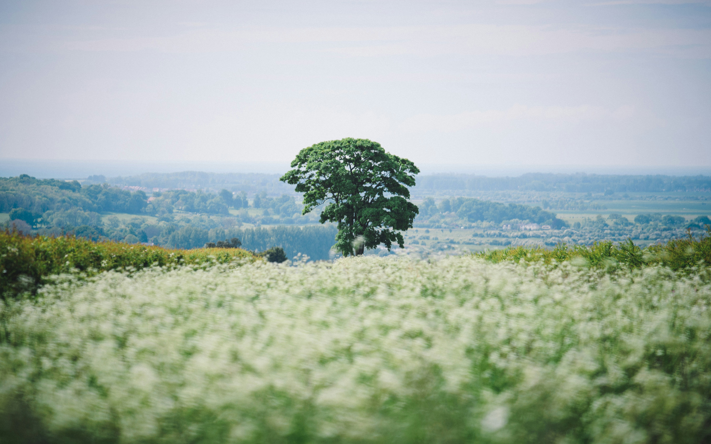
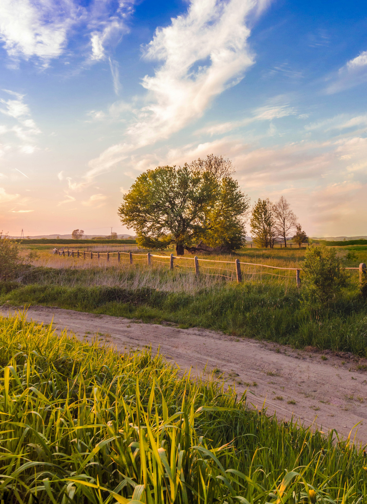

Importância de Aprender Habilidades de Gestão
O mundo em constante transformação exige novas formas de pensar e agir. Aprender a gerir bem territórios — sejam eles urbanos ou rurais — deixou de ser uma opção, tornando-se uma necessidade urgente.
A gestão envolve visão estratégica, sensibilidade social e capacidade de adaptação. Essas habilidades garantem qualidade de vida, produção sustentável e fortalecimento das comunidades.
 


